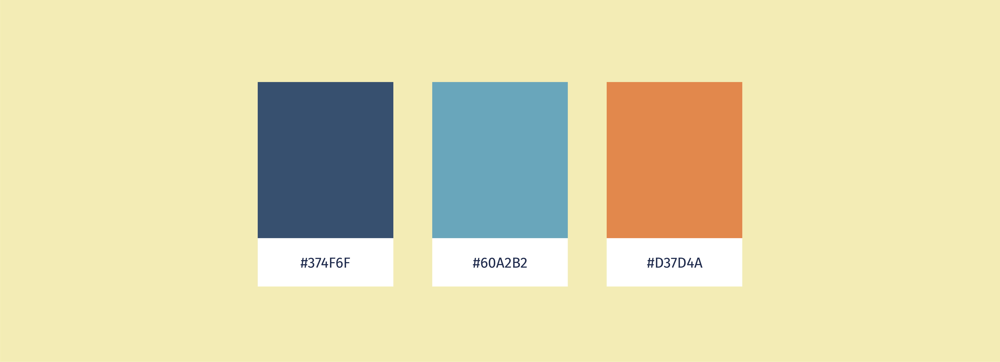

<!doctype html>

<html lang="es">
    <head>
        <meta charset="utf-8">
        <title>Siluetas - Victoria Vullioud</title>
        <link rel="stylesheet" href="estilos.css">
        <link href="imgs/favicon.png" rel="shortcut icon">
        <link rel="stylesheet" href="https://use.fontawesome.com/releases/v5.3.1/css/all.css" integrity="sha384-mzrmE5qonljUremFsqc01SB46JvROS7bZs3IO2EmfFsd15uHvIt+Y8vEf7N7fWAU" crossorigin="anonymous">
        <link rel="stylesheet" href="swiper/css/swiper.min.css">

        <meta name="keywords" content="victoria, vullioud, diseñadora gráfica, proyecto, libro, album, ilustración, siluetas, adultos">
        <meta name="author" content="Victoria Vullioud">
        <meta name="description" content="Proyecto realizado durante la cursada en FADU, UBA.">

        <meta name="robots" content="noindex, nofollow">

        <meta property="og:title" content="Victoria Vullioud - Siluetas">
        <meta property="og:description" content="Libro-Album ilustrado para adultos" />
        <meta property="og:type" content="website">
        <meta property="og:url" content="https://vv-works.netlify.com/proyecto-siluetas.html">
        <meta property="og:image" content="imgs/og-siluetas-07.png">
        <meta property="og:image:width" content="500" />
        <meta property="og:image:height" content="262" />
    </head>

    <body>
            <div class="header">
                <a href="index.html" class="logo">
                    
                </a>
                <ul class="lang">
                    <li>
                        <a href="index.html" title="Español">ES</a>
                    </li>
                    <li>
                        <a lang="en" href="proximamente.html" title="English">EN</a>
                    </li>
                </ul>
            </div> <!-- .header -->
            
            <div class="left">
                <a href="proyectos.html">Proyectos</a>
            </div>  <!-- .left -->

            <main>
                <section class="hero siluetas-hero">
                    <div class="werk-hero-text">
                        <h1>Siluetas</h1>
                        <p>Libro-Álbum realizado en la materia Ilustración, Cátedra Roldán, FADU, UBA.</p> 
                    </div>
                </section> <!-- .index-hero -->
                <section class="project-description">
                    <div class="project-description-left">
                        <ul class="project-descrip-list">
                            <li class="project-list-category">CATEGORÍA
                                <ul>
                                    <li>Ilustración</li>
                                    <li>Editorial</li>
                                </ul>
                            </li>
                            <li class="project-list-category category-year">AÑO
                                <ul>
                                    <li>2016</li>
                                </ul>
                            </li>
                        </ul>
                    </div>
                    <div class="project-description-right">
                        <h4 class="project-list-category">ACERCA DEL PROYECTO</h4>
                        <p>Siluetas es un libro-albúm realizado como proyecto final de la materia Ilustración. El trabajo consistió en realizar un libro ilustrado para adultos.</p>
                        <p>El cuento pertenece a Eugenia Almeida, las ilustraciones y el armado editorial fueron realizados por mi.</p> 
                                
                    </div>
                

                    <div class="swiper-container">
                        <div class="swiper-wrapper">
                            <div class="swiper-slide">
                                <div class="indication-swiper"><p>Deslizar </p><i class="fas fa-arrow-right arrow-swiper"></i></div>
                                
                            </div>
                            <div class="swiper-slide">
                                
                            </div>
                            <div class="swiper-slide">
                                
                            </div>
                            
                        </div>

                    </div> <!-- .swiper container -->
                    
                </section> <!-- .project-description -->
                
                <section class="project-content-container">
                    <div class="siluetas-content-01">
                        
                        <p  class="slideInUp"
                            data-700-bottom="animation-play-state: paused;"
                            data-bottom-top="animation-play-state: running;"
                        >Las composiciones fueron realizadas a mano, recortando papeles para armar los collages y luego dibujandoles por encima los detalles.</p>
                    </div>
                    <div class="siluetas-content-02 parallaxSmall">
                        
                    </div>
                    <div class="siluetas-content-03">
                        <h4>DETALLES</h4>
                        <div class="siluetas-03-detalles">
                            
                            <p>Las texturas de los trazos son el resultado de dibujar sobre superficies con relieve</p>
                        </div>
                        <div class="siluetas-03-detalles">
                            
                            <p>Las texturas de los trazos son el resultado de dibujar sobre superficies con relieve</p>
                        </div>

                    </div>
                    

                    <div class="project-footer-links">
                        <div>
                            <h4>PROYECTO ANTERIOR</h4>
                            <a href="proyecto-werk.html">Werk</a>
                        </div>
                        <div>
                            <h4>PRÓXIMO PROYECTO</h4>
                            <a href="proyecto-fasciculos.html">Vida de vivos</a>
                        </div>
                        
                    </div>

                </section>

            </main>

            <footer>
                <div class="footer-title">
                    <h3>¡Me interesan escuchar nuevas propuestas,<br>así que no seas timido y escribime!</h3>
                </div>
                <div class="footer-contact">
                    <ul>
                        <li class="footer-contact-elements footer-contact-links">
                            <a href="contacto.html" title="Contacto">¡Contactame!</a>
                        </li>
                        <li class="footer-contact-elements">Buenos Aires,<br>Argentina</li>
                        <li class="footer-contact-elements footer-contact-email">+54 11 4563 4831<br>
                            <a href="contacto.html">vvullioud.works@gmail.com</a>
                        </li>
                        <li class="footer-contact-elements footer-contact-links">
                            <a href="https://www.facebook.com/vicky.vullioud" title="Facebook"><i class="fab fa-facebook-f"></i></a>
                        </li>
                        <li class="footer-contact-elements footer-contact-links">
                            <a href="https://www.behance.net/VictoriaVullioud" target="blank" title="Behance"><i class="fab fa-behance"></i></a>
                        </li>
                        <li class="footer-contact-elements footer-contact-links">
                            <a href="https://linkedin.com/in/victoria-vullioud/" target="blank" title="LinkedIn"><i class="fab fa-linkedin-in"></i></a>
                        </li>
                    </ul>
                </div>
                <div class="footer-legal">
                    <p>Victoria Vullioud</p>
                    <p>© 2018 Diseño y programación por Victoria Vullioud</p>
                    <a href="#">Volver arriba <i class="fas fa-arrow-up"></i></a>
                </div>
            </footer>

            <div class="right">
                <a href="perfil.html">Sobre mi</a>
            </div>  <!-- .right -->

            <div class="contact-nav"
                data-top="display:inherit;
                        animation-play-state: paused;"
                data-400-end="
                        animation-play-state: running;"
                data-300-end="display: none;">
                        <a href="contacto.html" class="contact">Contacto</a>
                    
            </div>  <!-- .contact-nav -->

            <!-- <svg class="footer-svg" width="100vw" height="5vh">
                <rect width="100vw" height="5vh"
                style="fill:var(--naranja);" />
            </svg> -->
            <script src="js/skrollr.min.js"></script>
            <script>
                skrollr.init();
            </script>
            <script src="swiper/js/swiper.min.js"></script>
            <script>
                var mySwiper = new Swiper ('.swiper-container', {
                    // Optional parameters
                    direction: 'horizontal',
                    freeMode: 'true',
                    slidesPerView: 'auto',
                    grabCursor: true
                      
                });
                mySwiper.on('touchMove', function () {
                    var arrow = document.querySelector('.indication-swiper');
                    arrow.classList.add("hideAnimated");
                });
            </script>
            <script>
                /*
                EFECTO PARALLAX DE LAS PAGINAS
                */

                var elem= document.querySelector(".parallaxSmall");

                window.addEventListener("scroll", function() {

                    var scrolledHeight= window.pageYOffset,
                        limit= elem.offsetTop + elem.offsetHeight;
                                    
                    if(scrolledHeight > elem.offsetTop && scrolledHeight <= limit) {
                        elem.style.backgroundPositionY =  ( elem.offsetTop - scrolledHeight) /2.5+ "px";
                    
                    } else {
                        elem.style.backgroundPositionY=  "0";
                    }
                });
            </script>
    </body>


</html>